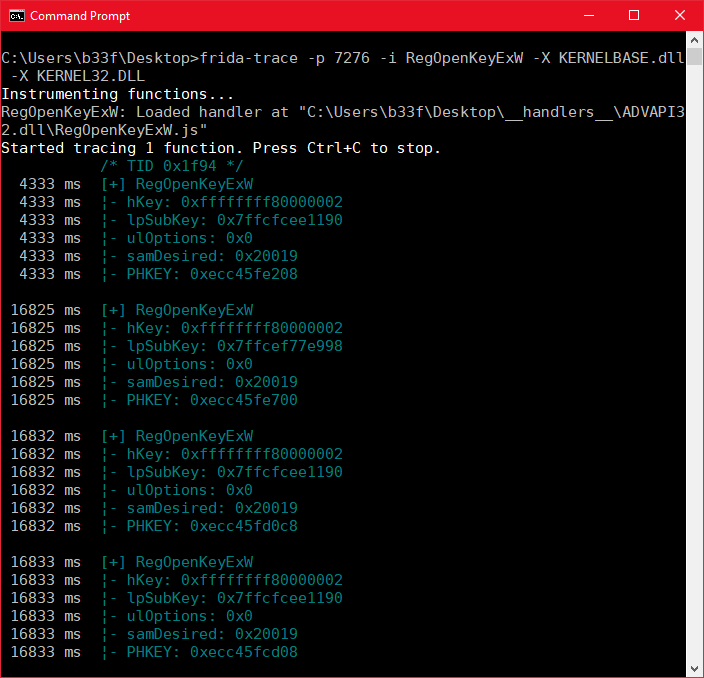
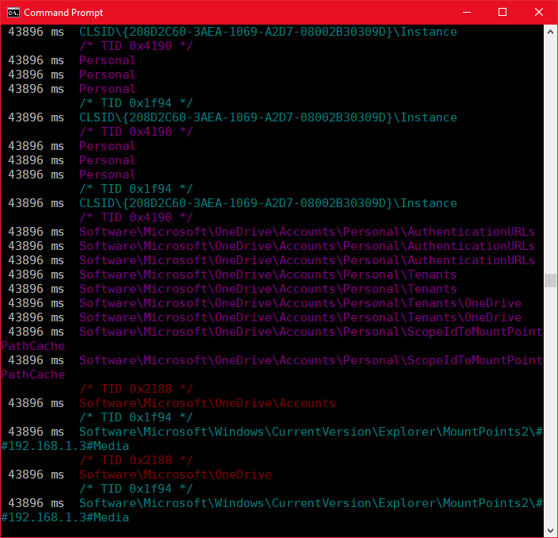
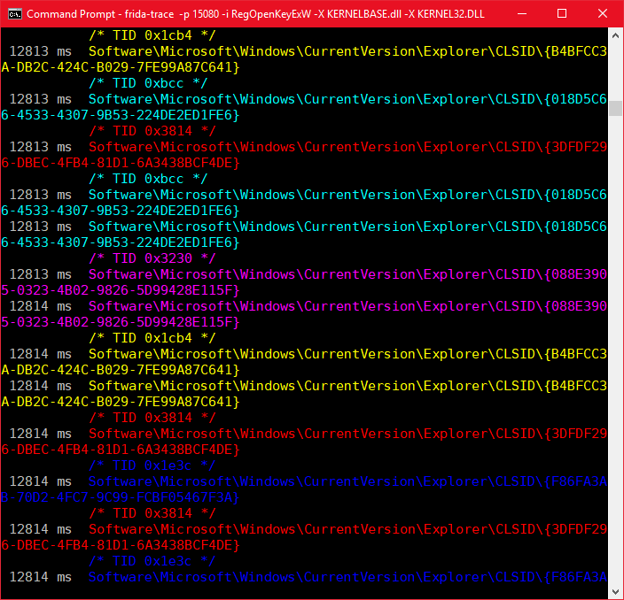
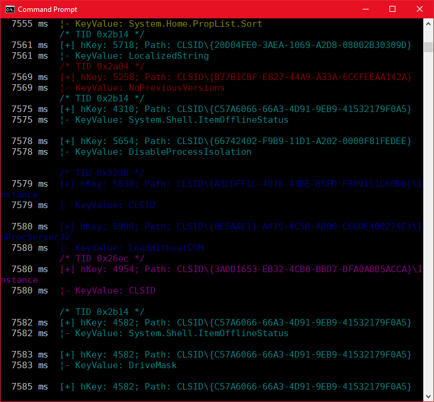
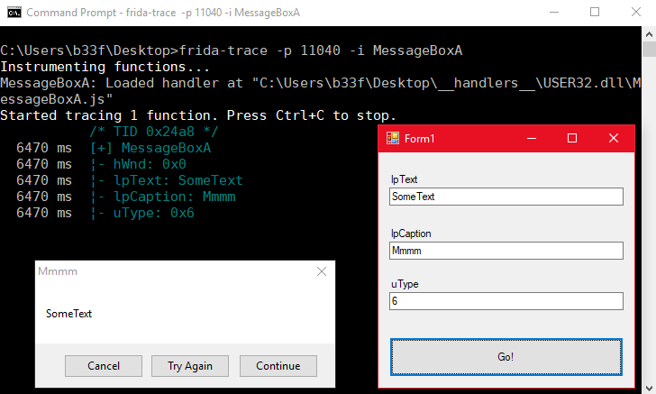
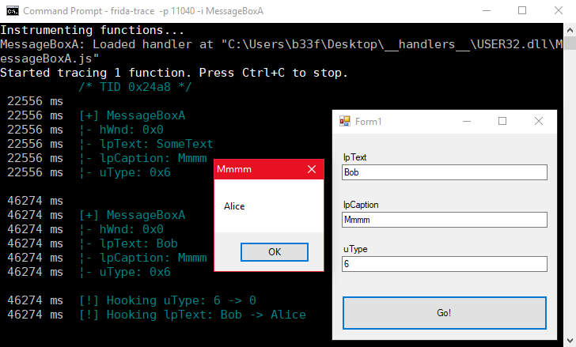

LONG WINAPI RegOpenKeyEx( _In_ HKEY hKey, // Handle to the open registry key (commonly the registry hive). _In_opt_ LPCTSTR lpSubKey, // The name of the registry subkey to be opened. _In_ DWORD ulOptions, // REG_OPTION_OPEN_LINK/NULL. _In_ REGSAM samDesired, // A mask that specifies the desired access rights to the key to be opened. _Out_ PHKEY phkResult // A pointer to a variable that receives a handle to the opened key. );
Application Introspection & Hooking With Frida
Hola! As a follow-up to my latest Patreon live session we will be doing a basic introduction to using Frida for application introspection and hooking on Windows. Throughout the post we will be using frida-trace as it offers a convenient live stream where we can inspect the changes made to our function hooks in real time. Once you get your head around the JavaScript syntax you can layer that knowledge onto the various Frida bindings (Python/C/Node/Swift/.Net/QML).
Why Frida? It gives a simple interface where you can rapidly develop complex hooking logic and make changes to it as your requirements/understanding evolves (compare that to the costly process of redeploying C++ function hooks). What to use Frida for? As our title suggests introspection (looking inside the app to analyze it's behavior) and hooking (changing the behavior of the app). From a security perspective Frida is a research tool, not suited for weaponized deployment. That being said, Frida can be used to prototype offensive hooks which can later be implemented in a different framework such as EasyHook for deployment.
Resources:
+ Frida (@fridadotre) - here
+ Peeking under the hood with Frida (Sam Rubenstein) - here
Registry Introspection
In this section we will look at passively monitoring registry activity within arbitrary Windows applications. To start of, we will have a look at RegOpenKeyExW which is most commonly used to open handles to registry keys. Below we can see the C++ function prototype.
One thing to keep in mind is that most API's will have an ANSI and a Unicode version. For our purposes we should assume that the Windows application we are hooking will be using the Unicode version. Let's briefly attach Frida to a process and define/print all of these arguments.

Frida makes this process exceedingly easy. When using trace, Frida creates a "__handlers__" folder in the current directory where it populates JS files with onEnter/onLeave prototypes for any function you have specified. Getting out function arguments is as easy as printing arguments in an array. The JS handler for the image above is shown below.
/*
* Auto-generated by Frida. Please modify to match the signature of RegOpenKeyExW.
* This stub is currently auto-generated from manpages when available.
*
* For full API reference, see: http://www.frida.re/docs/javascript-api/
*/
{
/**
* Called synchronously when about to call RegOpenKeyExW.
*
* @this {object} - Object allowing you to store state for use in onLeave.
* @param {function} log - Call this function with a string to be presented to the user.
* @param {array} args - Function arguments represented as an array of NativePointer objects.
* For example use Memory.readUtf8String(args[0]) if the first argument is a pointer to a C string encoded as UTF-8.
* It is also possible to modify arguments by assigning a NativePointer object to an element of this array.
* @param {object} state - Object allowing you to keep state across function calls.
* Only one JavaScript function will execute at a time, so do not worry about race-conditions.
* However, do not use this to store function arguments across onEnter/onLeave, but instead
* use "this" which is an object for keeping state local to an invocation.
*/
onEnter: function (log, args, state) {
log("[+] RegOpenKeyExW");
log("¦- hKey: " + args[0]);
log("¦- lpSubKey: " + args[1]);
log("¦- ulOptions: " + args[2]);
log("¦- samDesired: " + args[3]);
log("¦- PHKEY: " + args[4] + "\n");
},
/**
* Called synchronously when about to return from RegOpenKeyExW.
*
* See onEnter for details.
*
* @this {object} - Object allowing you to access state stored in onEnter.
* @param {function} log - Call this function with a string to be presented to the user.
* @param {NativePointer} retval - Return value represented as a NativePointer object.
* @param {object} state - Object allowing you to keep state across function calls.
*/
onLeave: function (log, retval, state) {
}
}
As we can see, we are able to pull out all of those function arguments, but for the purposes of quickly looking at registry activity the most telling argument is probably the lpSubKey. Of course the string pointer is not particularly useful but we can easily rewrite our onEnter function to pull out the unicode string as show below.
onEnter: function (log, args, state) {
log(Memory.readUtf16String(args[1]));
}
If we save our changes and perform some new activity in the app we see the full subkey registry paths being accessed by the application.

If you look closer at the output you will see that there is something missing. We don't actually get the registry hive, this is because the call is using a previously opened handle to whichever hive it is querying. We can tell what the hive is by doing lookup's on the used handles and tracking them across calls but that is outside the scope of this post. Notice also that the output is colorized based on thread context.
If you have been following some of the malarkey with COM Hijacking for privilege escalation and persistence you can understand that there may be a use case for listing registry access to paths containing "CLSID\" where the result of the call is a failure (most likely because the subkey is being queried in HKEY_CURRENT_USER). We can quickly modify our POC as follows to capture those calls.
onEnter: function (log, args, state) {
this.SubKey = Memory.readUtf16String(args[1]); // @this is available in onLeave
if (this.SubKey) { // Make sure the value is not null
if (this.SubKey.indexOf("CLSID\\") >= 0) {
this.ContainsCLSID = 1; // Bool -> contains substring
}
}
},
onLeave: function (log, retval, state) {
if (this.ContainsCLSID) { // Check Bool
if (retval != 0){ // If return value is not ERROR_SUCCESS
log(this.SubKey); // Print subkey
}
}
}
Saving our POC returns only attempts to open CLSID subkeys where the result was not ERROR_SUCCESS.

Similarly we could track which queries were successful. What if we wanted to know which key values were being accessed after successfully opening a subkey handle? Typically this would happen by using RegQueryValueEx. If we now hook both these functions we can implement some naive logic where we store the handle returned by a successful call to RegOpenKeyEx and on calling RegQueryValueEx we compare the input handle with the one we saved, if they match we can print the value which is being queried. We can see the code to achieve this below.
// The contents of the RegOpenKeyExW.js
//---------------------------------------------------------
onEnter: function (log, args, state) {
this.SubKey = Memory.readUtf16String(args[1]); // @this is available in onLeave
if (this.SubKey) { // Make sure the value is not null
if (this.SubKey.indexOf("CLSID\\") >= 0) {
this.ContainsCLSID = 1; // Bool -> contains substring
this.hSubKey = args[4];
}
}
},
onLeave: function (log, retval, state) {
if (this.ContainsCLSID) { // Check Bool
if (retval == 0){ // If return value is ERROR_SUCCESS
state.HandleKey = new Array(Memory.readInt(this.hSubKey), this.SubKey);
} // @state persists across API calls
// We create an array with the handle & path
}
}
// The contents of the RegQueryValueExW.js
//---------------------------------------------------------
onEnter: function (log, args, state) {
if (state.HandleKey) { // Check our array exists
if (state.HandleKey[0] == args[0]) { // Compare stored handle with the new handle
if (Memory.readUtf16String(args[1])) { // Make sure the value is not null
log("[+] hKey: " + state.HandleKey[0] + "; Path: " + state.HandleKey[1]);
log("¦- KeyValue: " + Memory.readUtf16String(args[1]) + "\n");
state.HandleKey = null; // We null here to clear the array
}
}
}
},
onLeave: function (log, retval, state) {
}
Refreshing our POC now only returns those entries we are filtering on.

This is a simple example but you can see that Frida allows you to easily instrument functions and play around with them without a costly Compile->Test->Compile cycle.
Hooking MessageBox
We have seen so far how we can do passive recon, in this section we will see how we can influence the behavior of an application. As a basic example I chose to use MessageBox as it is kind of the "Hello World" of the Windows API. To allow us to dynamically test our function hooks I wrote a small Windows forms test harness in C#, you can see the main functionality below.
using System;
using System.Runtime.InteropServices;
using System.Windows.Forms;
namespace msgbox
{
public partial class Form1 : Form
{
// Unmanaged MessageBoxA import
[DllImport("user32.dll")]
public static extern int MessageBox(
IntPtr hWnd,
String lpText,
String lpCaption,
UInt32 uType);
public Form1()
{
InitializeComponent();
}
private void button1_Click(object sender, EventArgs e)
{
// Grab our textbox inputs
String lpText = textBox1.Text;
String lpCaption = textBox2.Text;
UInt32 uType = Convert.ToUInt32(textBox3.Text);
MessageBox(IntPtr.Zero, lpText,lpCaption,uType);
}
}
}
Using the same techniques we saw in the previous section with can quickly hook the application and write some basic JS to dump out the MessageBox parameters. Notice the use of readAnsiString to match MessageBoxA.
onEnter: function (log, args, state) {
log("[+] MessageBoxA");
log("¦- hWnd: " + args[0]);
log("¦- lpText: " + Memory.readAnsiString(args[1]));
log("¦- lpCaption: " + Memory.readAnsiString(args[2]));
log("¦- uType: " + args[3] + "\n");
},
onLeave: function (log, retval, state) {
}

Frida has a number of functions to edit/allocate memory primitives, I suggest the reader has a look at the API documentation. For our simple demonstration I modified the JS to implement two types of hooks: (1) if lpText is "Bob" change it to "Alice" and (2) if the uType is 6 change it to 0.
onEnter: function (log, args, state) {
log("");
log("[+] MessageBoxA");
log("¦- hWnd: " + args[0]);
log("¦- lpText: " + Memory.readAnsiString(args[1]));
log("¦- lpCaption: " + Memory.readAnsiString(args[2]));
log("¦- uType: " + args[3] + "\n");
// uType hook
if (args[3] == 6) {
log("[!] Hooking uType: 6 -> 0");
args[3] = ptr(0); // Overwrite uType with NativePointer(0)
}
// lpText hook
if (Memory.readAnsiString(args[1]) == "Bob") {
log("[!] Hooking lpText: Bob -> Alice");
this.lpText = Memory.allocAnsiString("Alice"); // Allocate new heap ANSI string
args[1] = this.lpText; // Replace lpText pointer
}
},
onLeave: function (log, retval, state) {
}
We can observe the results in the image below. Notice that the parameters are checked individually so you could have a condition where both/none/one of the hooks is active.

Userland Process Hiding -> SystemProcessInformation
For the final part of this post I want to briefly show a more complex hooking example. If you have worked with undocumented API's on Windows at all the chances are good you have used NtQuerySystemInformation and some of it's information classes. One of these classes is the SystemProcessInformation class (0x5). As it turns out SystemProcessInformation is the authoritative source for userland processes so any applications that get process listings through whichever API's will end up filtering down to NtQuerySystemInformation whether they know it or not (Task Manager/Process Explorer/Process Hacker/.....).
I recently wrote a PowerShell wrapper for this function, Get-SystemProcessInformation, so I thought it would be a neat idea to try and hook this function with Frida to demonstrate userland process hiding.
SystemProcessInformation Memory Layout
To understand how the hook works we need to know what NtQuerySystemInformation actually returns when the SystemProcessInformation class is used. Hopefully the layout below helps provide some clarity.
NTSTATUS WINAPI NtQuerySystemInformation( _In_ UINT SystemInformationClass, // SYSTEM_INFORMATION_CLASS _Inout_ PVOID SystemInformation, // A pointer to a buffer that receives the requested information _In_ ULONG SystemInformationLength, // Byte count allocated for the request _Out_opt_ PULONG ReturnLength // Pointer to the variable to receives the output size ); SystemInformationClass => SystemProcessInformation = 0x5 SystemInformation => Pointer, eg 0x11223344556 -----------------------| | | | [Points at an array of SYSTEM_PROCESS_INFORMATION Structs] | | |-------------------------------------------------| | |--------------------------------------| | [Int]NextEntryOffset (eg:0x1fb) | --------------------> | | | | | | | | | | ....... | | | | | | | | | | | | [UNICODE_STRING]ImageName | | [2nd Entry = 1st Entry + 0x1fb] | |-> svchost.exe | | | | | | | | | | | | ....... | | | | | | | | | SYSTEM_THREAD_INFORMATION structs | | |--------------------------------------| | | [Int]NextEntryOffset (eg:0x222) | <-------------------> | | | | | | | | | | ....... | | | | | | | | | | | | [UNICODE_STRING]ImageName | | [3rd Entry = 2nd Entry + 0x222] | |-> powershell.exe | | | | | | | | | | | | ....... | | | | | | | | | SYSTEM_THREAD_INFORMATION structs | | |--------------------------------------| | | [Int]NextEntryOffset (eg:0x3a0) | <-------------------> | | | | | | | | | | ....... | | | | | | | | | | | | [UNICODE_STRING]ImageName | | [4th Entry = 3rd Entry + 0x3a0] | |-> notepad.exe | | | | | | | | | | | | ....... | | | | | | | | | SYSTEM_THREAD_INFORMATION structs | | |--------------------------------------| | ..... <------------>
This representation is not totally accurate because there are some fixed processes at the start of the array but it's serviceable. The key point is that each blob varies in size depending on how many SYSTEM_THREAD_INFORMATION structs are appended to the SYSTEM_PROCESS_INFORMATION struct.
SystemProcessInformation Hooking
Let's say we wanted to hide all PowerShell processes in that list, all we would need to do is traverse the list and rewrite the entry before PowerShell so the NextEntryOffset points to the next entry in the list.
|--------------------------------------| | [Int]NextEntryOffset (eg:0x1fb0x41d)| --------------------> | I | | | I | | | I | | | ....... I==================================> [3nd Entry = 1st Entry + 0x1fb + 0x222 | | | => 1st Entry + 0x41d] | | | | | | | [UNICODE_STRING]ImageName | | | |-> svchost.exe | | | | | | | | | | | | ....... | | | | | | | | | SYSTEM_THREAD_INFORMATION structs | | |--------------------------------------| | | [Int]NextEntryOffset (eg:0x222) | | | | | | | | | | | | ....... | | | | | | | | | | | | [UNICODE_STRING]ImageName | | | |-> powershell.exe | | | | | | | | | | | | ....... | | | | | | | | | SYSTEM_THREAD_INFORMATION structs | | |--------------------------------------| | | [Int]NextEntryOffset (eg:0x3a0) | <-------------------> | | | | | | | | | | ....... | | | | | | | | | | | | [UNICODE_STRING]ImageName | | [4th Entry = 3rd Entry + 0x3a0] | |-> notepad.exe | | | | | | | | | | | | ....... | | | | | | | | | SYSTEM_THREAD_INFORMATION structs | | |--------------------------------------| | ..... <------------>
This may seem a bit complicated but all we need to do is intercept the API call as it is about to return, loop over the list by reading offsets/unicode strings and overwrite a single integer per identified PowerShell process. You can see my Frida implementation below. Please note that these offsets were only tested on x64 Win10 (though they should be valid for Win7-10 x64).
onEnter: function (log, args, state) {
if (args[0] == 5) {
log("NtQuerySystemInformation:");
log(" --> Class : " + args[0] + " [SystemProcessInformation]");
log(" --> Addr : " + args[1]);
log(" --> len : " + args[2]);
log(" --> Retlen: " + Memory.readInt(args[3]) + "\n");
this.IsProcInfo = 1;
this.Address = args[1];
}
},
onLeave: function (log, retval, state) {
if (this.IsProcInfo) {
while (true) {
// Get struct offsets
var ImageOffset = ptr(this.Address).add(64); // ImageName->UNICODE_STRING->Buffer
var ImageName = Memory.readPointer(ImageOffset); // Cast as ptr
var ProcID = ptr(this.Address).add(80); // PID
// If PowerShell, rewrite the linked list
if (Memory.readUtf16String(ImageName) == "powershell.exe") {
log("[!] Hooking to hide PowerShell..");
log(" --> Rewriting linked list\n");
this.PreviousStruct = ptr(this.Address).sub(NextEntryOffset);
Memory.writeInt(this.PreviousStruct, (Memory.readInt(this.PreviousStruct)+Memory.readInt(this.Address)))
}
// Move pointer to next struct
var NextEntryOffset = Memory.readInt(this.Address);
this.Address = ptr(this.Address).add(NextEntryOffset);
if (NextEntryOffset == 0) { // The last struct has a NextEntryOffset of 0
break
}
}
// Null
this.IsProcInfo = 0;
}
}
I uploaded a short video demonstrating the SystemProcessInformation hook on YouTube. Btw, in theory there is an edge-case issue with the code (though I never triggered it) which I didn't fix, a free cookie for anyone that can tell me what it is.